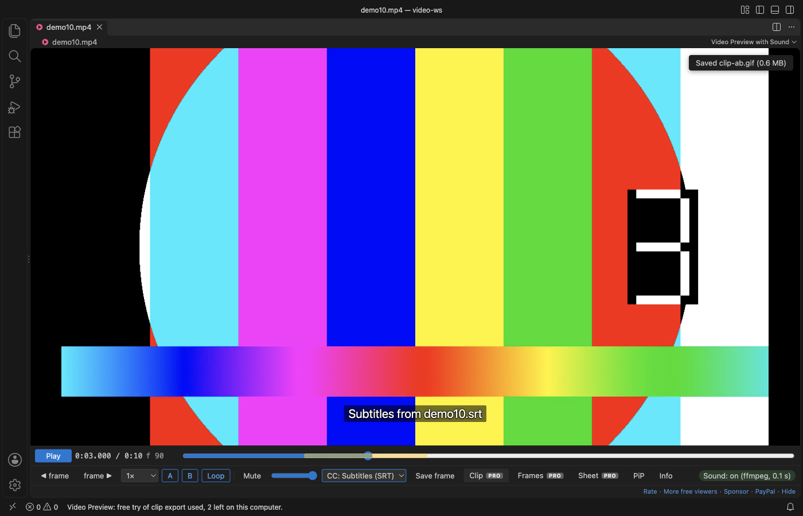

Open files in VS Code and Cursor / Media
Extract frames from a video in VS Code
Install Video Preview with Sound by Zovo in VS Code and open the video. To save the frame on screen, click "Save frame": free. To pull many frames, press "Frames" and pick every frame, every 5th or 10th, one per second or 10 evenly spaced, then a folder. Each frame is a full-size PNG named with its time and frame number, up to 1,000 per export. The frame export, GIF clips and contact sheets are Zovo Pro (USD 19 once) with 3 free tries each.
Free, MIT license. Extension ID zovo.video-preview-with-sound, version 0.3.4. Needs VS Code 1.90.0 or newer.

Steps in VS Code
- Install Video Preview with Sound from the Marketplace, or press Ctrl+P (Cmd+P on macOS) and run
ext install zovo.video-preview-with-sound. - Click an .mp4, .mov, .mkv, .webm or .avi file. It plays in VS Code with its sound.
- Step with the frame buttons and click "Save frame" to save the frame on screen (free).
- Set A and B to limit the export to a part of the video, or leave them for the whole video.
- Press "Frames", pick the spacing and a folder. Esc stops the export.
Steps in Cursor, Windsurf or VSCodium
- Open the Extensions view with Ctrl+Shift+X (Cmd+Shift+X on macOS).
- Search for
zovo.video-preview-with-soundand click Install. Cursor, Windsurf and VSCodium install from Open VSX, where it is published aszovo/video-preview-with-sound. - If your editor has no gallery, download the .vsix from the Open VSX page and run "Extensions: Install from VSIX...".
- Then use it the same way as in VS Code.
What Video Preview with Sound handles
- Full-size PNG frames named like
clip-00m12s345-f370.png, up to 1,000 per export. - Clip export (Zovo Pro): a GIF made inside the player, up to 960 px and 60 s, or an MP4 cut by your ffmpeg.
- Contact sheet (Zovo Pro): 16, 30 or 48 frames in one PNG, with time and frame number under each.
- MKV, WebM, ProRes and AVI play after a conversion with your ffmpeg.
What it does not do
- MP4 clip export, and playing formats VS Code cannot decode, need ffmpeg installed. GIF and frame export do not.
- At most 1,000 frames per export.
Free and Zovo Pro
Free, and staying free: playing MP4 and MOV with sound, MKV, WebM and other formats through your ffmpeg, subtitles, frame stepping, A-B loop, speed, resume and Save frame.
Zovo Pro adds these tools to Video Preview. Each one works 3 times on your computer before it asks for a license. Nothing about Pro shows when you open a file: no popup, no countdown, no banner.
- Frame export: every frame, every 5th or 10th, one per second, or 10 evenly spaced, as full-size PNG.
- Clip export: a GIF made in the player, or an MP4 cut by your ffmpeg.
- Contact sheet: 16, 30 or 48 frames in one PNG.
Zovo Pro costs USD 19 once. It is not a subscription, and one purchase covers every Zovo VS Code extension. Today it also covers the Pro tools in Hex Viewer, Postgres & MySQL Query Client and DOCX Viewer, and Pro tools added to other Zovo extensions later.
Two ways to unlock it:
- GitHub Sponsors: pick the "$19 one time" tier. Then, in VS Code, click a Pro tool and pick "Unlock with GitHub Sponsors" (or type "GitHub Sponsors" in the Command Palette) and sign in with the same GitHub account. A monthly sponsorship of USD 10 or more that is still running counts too.
- PayPal, no GitHub account needed: send USD 19 by PayPal with "Zovo Pro" in the note, then post the transaction ID with the Zovo Pro key form (a public GitHub issue, so post only the ID). The license key goes to the email address of your PayPal account within a day. Click a Pro tool and pick "I have a license key" (or type "license key" in the Command Palette) and paste it. The key is checked on your computer, with no network call.
A team of 5: USD 59 once by PayPal, with "Zovo Pro Team" in the note. Every rule and every Pro tool is on the Zovo Pro page.
In JetBrains IDEs (IntelliJ IDEA, PyCharm, WebStorm, CLion and others)
- Video2Gif. Converts an MP4 file to a GIF from the Tools menu (1,784 downloads). Zovo has no JetBrains video plugin.
Other options
- ffmpeg.
ffmpeg -i in.mp4 -vf fps=1 frame-%04d.pngsaves one frame per second. Free. - Video Image Extractor (
LijoyKurian.video-image-extractor, 151 installs, not on Open VSX). Its own description: "Extract frames from videos at specified timestamps using ffmpeg - GitHub Copilot Language Model Tool". Not on Open VSX. - VLC. Video, Take Snapshot saves the frame on screen; the scene filter saves frames at an interval. Free.
Install counts and Open VSX status were checked on 9 November 2026. Descriptions in quotes are the extensions' own.
Questions
Can I save a single frame for free?
Yes. "Save frame" saves the exact frame on screen as a full-size PNG.
Do I need ffmpeg?
Not for MP4 and MOV with H.264, frame export or GIF clips. You need it for MP4 clip export and to play MKV, WebM, ProRes and other formats VS Code cannot decode.
What does Zovo Pro cost?
USD 19 once for every Zovo VS Code extension. Each Pro tool works 3 times before it asks.
More about Video Preview with Sound
Read the Video Preview with Sound page for every feature and setting, or the source code on GitHub.
Related guides
- MP4 Video Player & Preview with Sound on the VS Code Marketplace (also on Open VSX). Plays MP4, MOV, MKV and WebM files in VS Code, with sound.
- Why VS Code plays MP4 with no sound, and how to fix it
- Make a video contact sheet
- Play MOV, MKV and WebM videos in VS Code
- Play audio files in VS Code
Zovo Pro and support
Zovo Pro: USD 19 once, every Zovo viewer. It turns on the Pro tools in this extension and in the other Zovo extensions you use. The free features stay free.
After a card payment your license key shows on the next page. Paste it with the command "Zovo Pro: Enter a key".
You can also support the work with no Pro:
Need your format supported?
Open a format request with a sample file, and I reply there whether it can be done. For USD 299 once, through this GitHub Sponsors tier, I add your file format or a missing feature to this extension, with tests, within 7 days.